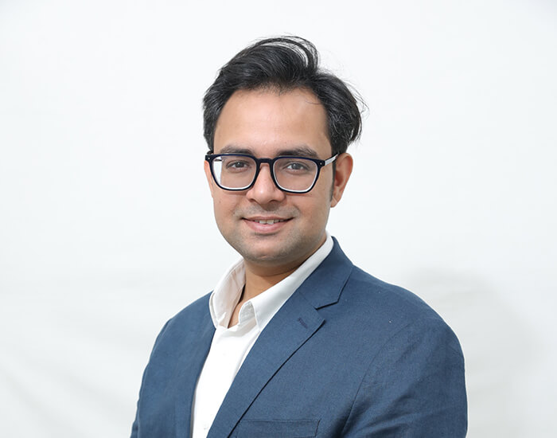

Faculty
 Ark VermaAssociate ProfessorDept. of Cognitive ScienceIIT Kanpur
Ark VermaAssociate ProfessorDept. of Cognitive ScienceIIT Kanpur N.P. SudharshanaProfessorDept. of Humanities and Social SciencesIIT Kanpur
N.P. SudharshanaProfessorDept. of Humanities and Social SciencesIIT Kanpur Lalit SaraswatAssistant ProfessorDept. of Humanities and Social SciencesIIT Kanpur
Lalit SaraswatAssistant ProfessorDept. of Humanities and Social SciencesIIT Kanpur
Himanshu YadavAssistant ProfessorDept. of Cognitive ScienceIIT Kanpur Arnab BhattacharyaProfessorDept. of Computer Science and EngineeringIIT Kanpur
Arnab BhattacharyaProfessorDept. of Computer Science and EngineeringIIT Kanpur Chaithra PuttuswamyAssociate ProfessorDept. of Humanities and Social SciencesIIT Kanpur
Chaithra PuttuswamyAssociate ProfessorDept. of Humanities and Social SciencesIIT Kanpur
Collaborators
 Dr. Apoorva PauranicNeurologist, Ex-Professor (MGM Medical College)Pauranic Health Care CentreIndore
Dr. Apoorva PauranicNeurologist, Ex-Professor (MGM Medical College)Pauranic Health Care CentreIndore
Project Associates
 Shivani YadavProject AssociateMasters in Cognitive ScienceCBCS Allahabad
Shivani YadavProject AssociateMasters in Cognitive ScienceCBCS Allahabad Thamizharasi XProject AssociateMasters in Cognitive ScienceCBCS Allahabad
Thamizharasi XProject AssociateMasters in Cognitive ScienceCBCS Allahabad Sovan SahooProject AssociateMasters in Cognitive ScienceIIT Kanpur
Sovan SahooProject AssociateMasters in Cognitive ScienceIIT Kanpur